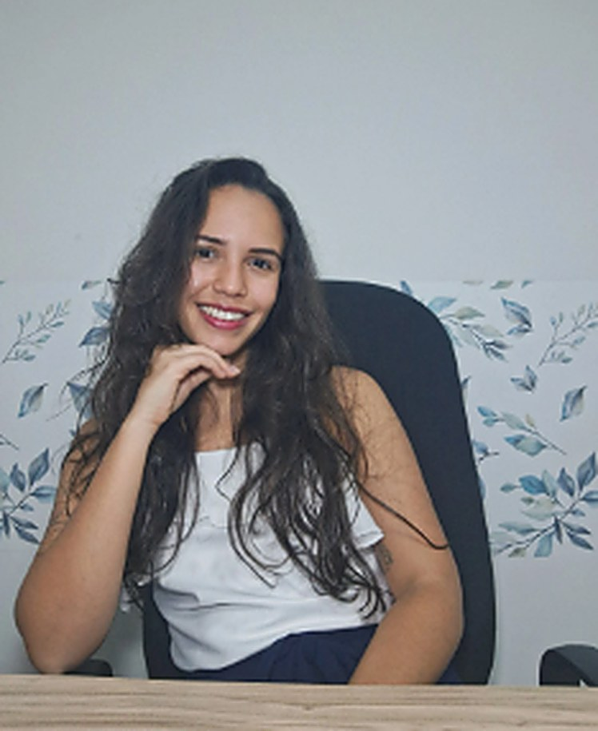
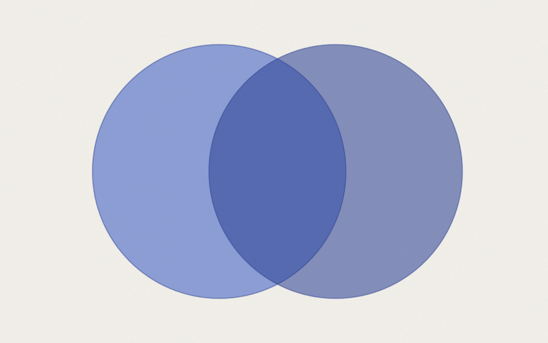

Sou Eduarda Manzoli, psicóloga formada pela UFES. Atendo crianças, adolescentes e adultos em uma clínica orientada pela psicanálise. Aqui não se trata de dar respostas prontas, mas de abrir espaço para que as suas próprias apareçam.
“Escutar alguém profundamente exige abrir mão do lugar de quem sabe.”
A psicanálise é uma clínica que cura através do amor.Sobre o que sustenta o trabalho aqui

Me formei em Psicologia pela Universidade Federal do Espírito Santo e desde então trabalho na clínica, orientada pela psicanálise. Atendo adultos, adolescentes e crianças. Acredito que toda clínica com adultos é, também, uma clínica com crianças.
O que ofereço não é um método para consertar você. É um espaço onde o que você diz pode ser levado a sério, inclusive aquilo que você diz sem querer.
Cada tempo da vida pede uma escuta diferente. O que não muda é o lugar que ofereço: um espaço reservado, sigiloso e sem pressa.
Para quem sente que algo se repete e não sabe nomear. Angústia, sintomas que insistem, escolhas travadas, relações que doem sempre do mesmo jeito.
Um tempo de muita transformação e pouca escuta. Ofereço um espaço que é só deles, fora do julgamento da família, da escola e das redes.
Criança fala brincando. O trabalho acontece pelo brincar e pelo desenho, com acompanhamento próximo aos pais ou responsáveis.
Nenhum passo compromete o seguinte. Você pode parar em qualquer um deles.
Você me escreve pelo direct ou pelo WhatsApp contando, com as palavras que tiver, o que te traz até aqui.
Alguns encontros iniciais para nos conhecermos e para que eu entenda a sua demanda. Também é quando você me avalia.
Definimos dia, horário, frequência e valor. Normalmente uma ou duas sessões por semana, online ou presencial.
A partir daí, é construção. Sem prazo determinado, porque nem todo sofrimento quer ser resolvido rapidamente.
Atendo por vídeo em todo o Brasil e para brasileiros fora do país, com o mesmo sigilo, a mesma frequência e o mesmo cuidado do presencial. Para quem prefere o consultório, atendo em Vitória e Vila Velha.
Escrevo aqui sobre o que a escuta me ensina, sempre com o sigilo preservado.
Não existe um critério objetivo. Em geral as pessoas procuram quando algo insiste: um sintoma, uma angústia, uma repetição que não cede. Mas também é legítimo procurar sem crise nenhuma, só por querer se escutar melhor.
Não há prazo determinado. A psicanálise não trabalha com pacotes de sessões, porque nem todo sofrimento quer ser resolvido rapidamente. O que combinamos desde o início é a frequência, e revisamos o percurso juntos ao longo do caminho.
O mais comum é uma ou duas vezes por semana, com sessões definidas no enquadre inicial. A regularidade é parte do trabalho: é ela que sustenta a continuidade da fala.
O valor é combinado no primeiro contato e considera a sua realidade. Falar de dinheiro também faz parte da análise. Me escreva sem constrangimento.
Sim. O enquadre se mantém: mesmo horário, mesma frequência, mesmo sigilo. O que muda é o meio, não o trabalho.
Com crianças, o trabalho acontece principalmente pelo brincar e pelo desenho. Mantenho encontros periódicos com os pais ou responsáveis, preservando sempre o espaço da criança.
Sim. O sigilo é garantido pelo Código de Ética Profissional do Psicólogo, com as poucas exceções previstas em lei, que explico no início do trabalho.
Psicóloga formada pela UFES · CRP 16/11657 · Atendimento a adultos, adolescentes e crianças.
Fui aquela criança para quem todo mundo desabafava. Demorei para entender que aquilo não era um traço de simpatia. Era um interesse muito específico por aquilo que as pessoas dizem sem perceber que estão dizendo.
Me formei em Psicologia pela Universidade Federal do Espírito Santo e, desde a graduação, o encontro com a psicanálise foi decisivo. Não porque ela oferecesse respostas, mas exatamente pelo contrário: porque ela recusa a pressa de responder.
Vivemos num tempo que quer o sofrimento resolvido em sete passos. A psicanálise faz outra aposta: a de que existe um saber no próprio sujeito, e que ele aparece quando alguém escuta sem se apressar em interpretar. Escutar alguém profundamente exige abrir mão do lugar de quem sabe.
Às vezes o sofrimento está naquilo que o sujeito tolera por tempo demais.
Atendo os três tempos da vida, e isso não é acaso. Toda clínica com adultos é, também, uma clínica com crianças: o que se escuta em uma análise adulta quase sempre tem endereço na infância. Com crianças, o trabalho se faz pelo brincar; com adolescentes, por um espaço que seja só deles.
Presencial: Vitória e Vila Velha, Espírito Santo.
Online: para todo o Brasil e para brasileiros fora do país, por vídeo, com o mesmo enquadre e o mesmo sigilo.
Graduação em Psicologia. Universidade Federal do Espírito Santo (UFES)
Registro profissional. CRP 16/11657
Formação continuada em Psicanálise. Supervisão clínica e análise pessoal permanentes
Análise pessoal e supervisão não são detalhes de currículo: são exigências éticas do ofício. Nenhum analista escuta bem sem ser, ele mesmo, escutado.
Sobre escuta, sintoma, repetição e as perguntas que a psicanálise insiste em manter abertas.

Atendimentos e informações também pelo direct do Instagram. Respondo pessoalmente.
Suas informações são confidenciais e não são compartilhadas com ninguém.
Última atualização: agosto de 2026
O sigilo profissional é a base do trabalho clínico. Esta página explica como as suas informações são tratadas, tanto no atendimento quanto neste site.
Tudo o que é dito em sessão está protegido pelo sigilo profissional previsto no Código de Ética Profissional do Psicólogo (Resolução CFP nº 010/2005). As exceções são restritas e previstas em lei, como situações de risco à vida do próprio paciente ou de terceiros, e são explicadas no início do trabalho.
No atendimento a crianças e adolescentes, o sigilo é igualmente preservado. Informações são compartilhadas com os responsáveis apenas na medida necessária ao acompanhamento, sempre com o conhecimento do paciente.
Os formulários de contato coletam apenas nome, e-mail, telefone e a mensagem que você escolher escrever. Esses dados são utilizados exclusivamente para responder ao seu contato e não são compartilhados, vendidos ou cedidos a terceiros.
O site utiliza cookies apenas para medir visitas de forma agregada e anônima. Nenhum dado sensível é armazenado no navegador.
As sessões online são realizadas por plataforma com criptografia, em ambiente reservado de ambos os lados. As sessões não são gravadas em nenhuma hipótese.
Conforme a Lei Geral de Proteção de Dados (Lei nº 13.709/2018), você pode solicitar a qualquer momento o acesso, a correção ou a exclusão dos seus dados de contato. Basta escrever pelo formulário ou pelo WhatsApp.
Eduarda Manzoli. Psicóloga · CRP 16/11657 · Graduada em Psicologia pela Universidade Federal do Espírito Santo (UFES).